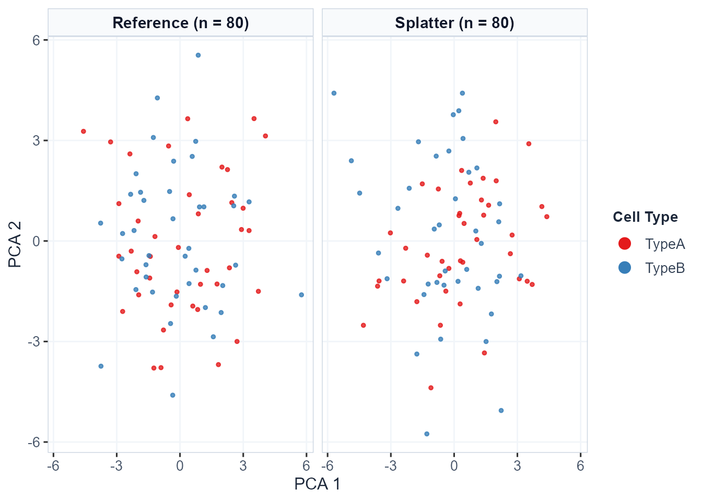

Getting Started with scSimEval: Unified Benchmarking for Single-Cell Multiomics Simulations
Kabilan S, Dr. Dwijesh Chandra Mishra, Dr. Shashi Bhushan Lal, Dr. Sudhir Srivastava, Dr. Krishna Kumar Chaturvedi, Dr. Sharanbasappa
2026-10-27
Source:vignettes/scSimEval-workflow.Rmd
scSimEval-workflow.Rmd1. Introduction
Computer simulations of single-cell technologies—specifically single-cell RNA sequencing (scRNA-seq), single-cell ATAC sequencing (scATAC-seq), and paired scRNA-seq + scATAC-seq multiomics—are widely used in bioinformatics research. They help scientists test computational pipelines, optimize analysis workflows, and evaluate statistical models. A critical question is always: how realistic is the simulated data compared to genuine biological experiments?
scSimEval provides a comprehensive
evaluation framework by calculating 48 Gold-Standard evaluation
measures organized into 8 easy-to-understand categories (39 for unimodal
assays, 48 for paired multiomics). It directly benchmarks
simulated data against empirical reference datasets using:
-
Real experimental reference data
(
ref_rna,ref_atac) -
Simulated synthetic data (
sim_rna,sim_atac) -
Cell type annotations
(
cell_types) -
Batch or donor identifiers
(
batch_info) - Computer resources (Runtime in seconds and peak RAM in MiB)
- Developmental trajectories (automatically inferred directly from scRNA-seq counts without requiring external tools)
Data Modalities:
scSimEvalsupports three multiomics experimental designs: Paired (co-assay from identical cells, e.g. 10x Multiome, SHARE-seq) — full evaluation including all Category 7 coupling metrics; Unpaired (independent scRNA-seq + scATAC-seq from separate cells) — unimodal evaluation per modality plus population-level cross-modal metrics (module fidelity, network overlap, label transfer); and Mosaic (partial co-measurement, e.g. DOGMA-seq) — unimodal evaluation on full matrices plus paired coupling metrics applied to the co-assayed cell subset. See the dedicated Multiomics vignette for full details.
2. Package Architecture and Workflow
The following workflow diagram shows the step-by-step benchmarking
process in scSimEval:

Figure 1: End-to-end benchmarking workflow of scSimEval. The framework takes real and simulated single-cell multiomics data, evaluates 48 gold-standard metrics across 8 foundational categories, and produces standardized scores, comprehensive figures, and ranking leaderboards.
The evaluation process follows four simple steps:
Step 1: Input Real and Simulated Data
Provide your real experimental reference and simulated count matrices
(ref_rna, sim_rna, ref_atac,
sim_atac), along with cell type labels
(cell_types), batch labels (batch_info), and
computer resource records (runtime in seconds and peak RAM in MiB).
2.1 Input Data Formats & Metadata Requirements (Cell Types & Batch Labels)
To evaluate your datasets, scSimEval accepts standard
single-cell matrices and optional metadata:
-
Count Matrices (
ref,sim):- Dimensions: Features (Genes or ATAC Peaks) in rows Cells in columns.
-
Data Types: R sparse matrices
(
dgCMatrix), standard numeric matrices,data.frame, or Bioconductor count containers (SingleCellExperiment,Seurat).
-
Cell-Type Annotations (
cell_types, optional):Used for computing clustering fidelity metrics (Adjusted Rand Index, Normalized Mutual Information, Silhouette width), marker gene preservation, and cell-type coloring in embedding projections.
-
Format in R: A character vector or factor whose length and ordering strictly match the cells (columns) in the reference count matrix:
-
Format in CSV/TSV: A 2-column table with
Cell_IDandCell_Type(or a single-column file ordered identically to the count matrix):Cell_ID,Cell_Type Cell_01,TypeA Cell_02,TypeA Cell_03,TypeB
-
Batch Annotations (
batch_info, optional):Used for Category 4 batch mixing and technical confounder alignment metrics (kBET, CMS, LISI, variance decomposition).
-
Format in R: A character vector or factor matching cell columns:
-
Format in CSV/TSV: A 2-column table with
Cell_IDandBatch:Cell_ID,Batch Cell_01,Batch1 Cell_02,Batch2 Cell_03,Batch1
-
Exporting Annotations from Seurat or SingleCellExperiment:
# From a Seurat object: cell_types_df <- data.frame(Cell_ID = colnames(seurat_obj), Cell_Type = as.character(Idents(seurat_obj))) write.csv(cell_types_df, "cell_types.csv", row.names = FALSE) batch_df <- data.frame(Cell_ID = colnames(seurat_obj), Batch = as.character(seurat_obj$batch)) write.csv(batch_df, "batch_annotations.csv", row.names = FALSE) # From a SingleCellExperiment object: cell_types_df <- data.frame(Cell_ID = colnames(sce), Cell_Type = as.character(colData(sce)$cell_type)) write.csv(cell_types_df, "cell_types.csv", row.names = FALSE)
2.2 Metric Measurement Capacity by Data & Metadata Mode
scSimEval dynamically scales its evaluation depth based
on the experimental data layers and metadata files provided:
| Experiment Mode | Uploaded Inputs | Metrics Measured | Active Evaluation Categories & Scope |
|---|---|---|---|
| Single-Cell (scRNA / scATAC) | Count Matrix alone (no metadata) | ~23 Metrics | Cat I (Distributional Properties, 14 metrics), Cat II (Correlations & Zeroes, 6 metrics), Cat VI (Trajectory, 2 metrics), Cat VIII (Scalability, 2 metrics). Evaluates basic statistical distributions, library sizes, and sparsity curves. |
| Single-Cell (scRNA / scATAC) | Matrix + Cell Types | ~35–38 Metrics | Adds +12–15 metrics: Unlocks Cat III (Cellular Structure & Clustering / ARI, NMI, AMI, Silhouette) and Cat V (Biological Signal / SimBench DE, DP, DV, top DEG Jaccard overlap). |
| Single-Cell (scRNA / scATAC) | Matrix + Batch Info | ~30 Metrics | Adds +7 metrics: Unlocks Cat IV (Batch Effects & Confounder Mixing / Batch Silhouette, Shannon Entropy, PCR , CMS, ISI, Seurat mixing). |
| Single-Cell (scRNA / scATAC) | Full Metadata (Matrix + Cell Types + Batch) | Up to ~55 Metrics | Unlocks the complete unimodal suite across Categories I, II, III, IV, V, VI, and VIII. |
| Paired Multiomics (scRNA + scATAC) | RNA + ATAC Matrices alone | ~48 Metrics | Unimodal distributions for both modalities (~40 metrics) PLUS Cat VII (Cross-Modal Coupling: FOSCTTM cell alignment, Match@1, cross-modal generation, coefficient, peak-to-gene linkage). |
| Paired Multiomics (scRNA + scATAC) | Full Metadata (RNA + ATAC + Cell Types + Batch) | All 48 Metrics | Complete multiomics benchmark suite across all 8 canonical categories (Categories I–VIII). |
| Unpaired Multiomics (Independent cells) | RNA + ATAC Matrices alone | ~26 Metrics | Both unimodal distributions plus population-level coupling (co-expression module fidelity, Network Jaccard, cross-modality correlation). |
| Unpaired Multiomics (Independent cells) | RNA + ATAC + Cell Types (+ Batch) | Up to ~41 Metrics | Essential for unpaired designs: Unlocks cluster-matched cross-modal label transfer concordance, cell-type regulatory linkage, and technical donor integration. |
Step 2: Calculate Evaluation Measures
scSimEval calculates 48 gold-standard evaluation
measures across 8 core categories (39 unimodal, 48 paired
multiomics).
Step 3: Run the Complete Benchmark
Execute the complete evaluation in a single command using
evaluate_simulation_accuracy(),
evaluate_multiomics_accuracy(), or
evaluate_multiple_datasets().
3. Score Normalization and Visual Mapping Workflow
In single-cell benchmarking, different metrics have completely different units and directions. For example, runtime is in seconds, peak memory is in megabytes, statistical distances are near zero, and clustering accuracy ranges between -1 and 1. Furthermore, for some metrics, smaller values are better (such as distance, error, and runtime), whereas for others, larger values are better (such as correlation and accuracy).
To make fair and intuitive comparisons, scSimEval uses
an automated two-step score normalization pipeline,
followed by clear visual mapping:

Figure 2: Score normalization and visual mapping workflow in scSimEval. Box 1 shows the two-step normalization process: direction inversion for lower-is-better metrics followed by min-max scaling to a standard 0 to 1 range. Box 2 illustrates the visual mapping into bubble matrices, where bubble size reflects simulation quality and top performers for each metric are highlighted with bold circular outlines.
3.1 Two-Step Score Normalization
Step 1: Direction Inversion (Aligning Direction) For all metrics where smaller values mean better simulation results (such as Kolmogorov-Smirnov distance, Wasserstein distance, root mean square error, and runtime), scores are inverted: After inversion, larger numbers consistently represent better simulation fidelity across every metric.
Step 2: Min-Max Scaling ( to ) All values are rescaled to a standard range from (worst performer) to (best performer):
3.2 Visual Mapping to Bubble Matrices
- Bubble Size: Directly represents the standardized score ( to ). Larger bubbles indicate higher simulation quality and closer match to real biology.
- Top-Performer Highlighting: The best-performing simulator for each evaluation metric is highlighted with a bold circular outline, while standard scores are shown as circles with standard outlines.
- Category Color Themes: Each metric category has its own distinct color (for example, blue for distributions, green for marker genes, and orange for computer speed).
- Missing Feature Dots: Features or modalities not supported by a simulator appear as neutral, small grey dots.
- Overall Leaderboard Ranking: Simulators are arranged vertically from top to bottom by their composite average score across all criteria.
4. Installation and Getting Started
To install and load scSimEval directly
from GitHub:
# Install devtools if needed
if (!requireNamespace("devtools", quietly = TRUE)) install.packages("devtools")
# Install scSimEval from GitHub
devtools::install_github("kabilanbio/scSimEval")
# Load the package
library(scSimEval)scSimEval includes built-in example datasets so you can
test all functions immediately: *
example_scrna: Paired real and simulated
scRNA-seq matrices
()
with cell type labels and batches. *
example_scatac: Paired real and simulated
scATAC-seq chromatin accessibility matrices
().
* example_multiomics: A paired bundle
containing both RNA and ATAC modalities, cell labels, and computer
resource logs.
# Load example datasets
data(example_scrna)
data(example_scatac)
data(example_multiomics)
# Check dimensions
cat("Real scRNA-seq dimensions:", dim(example_scrna$ref), "\n")
#> Real scRNA-seq dimensions: 60 80
cat("Simulated scRNA-seq dimensions:", dim(example_scrna$sim), "\n")
#> Simulated scRNA-seq dimensions: 60 80
cat("Cell types present:", levels(example_scrna$cell_types), "\n")
#> Cell types present: TypeA TypeBPackage Example Datasets vs. Shiny App Demo Data: The R package datasets above (
example_scrna,example_scatac,example_multiomics) are small, runnable raw count matrices (60 features x 80 cells) engineered for rapid demonstration and unit testing in standard R terminal sessions. In contrast, the Shiny App Studio (launch_scSimEval_app()) bundles a rich pre-computed multi-dataset benchmark evaluation suite (demo_benchmark_data.rds, 6 simulators evaluated across all 48 gold-standard metrics on 2 datasets) allowing interactive exploration of leaderboards, bubble matrices, and diagnostic plots without waiting for long evaluation runs.
5. Evaluating Data Properties and Distributions
The function evaluate_simulation_accuracy() evaluates 1D
and 2D statistical distributions and zero-count patterns between real
and simulated matrices:
# Evaluate unimodal accuracy on scRNA-seq
unimodal_res <- evaluate_simulation_accuracy(
ref_data = example_scrna$ref,
sim_data = example_scrna$sim,
compute_bivariate = FALSE,
verbose = FALSE
)
# Preview library size distribution metrics
lib_summary <- subset(unimodal_res$metrics_summary_table, Property == "library_size")
knitr::kable(head(lib_summary, 8), digits = 4, caption = "Library Size Statistical Distance Measures")| Category | Property | Metric | Value |
|---|---|---|---|
| Distributional Properties | library_size | MAD | 15.0000 |
| Distributional Properties | library_size | KS | 0.2125 |
| Distributional Properties | library_size | MAE | 15.0625 |
| Distributional Properties | library_size | RMSE | 15.7150 |
| Distributional Properties | library_size | OV | 0.8370 |
| Distributional Properties | library_size | Bhattacharyya | 0.0001 |
| Distributional Properties | library_size | Wasserstein | 15.0625 |
| Distributional Properties | library_size | ECDF_DiffArea | 0.0766 |
5.1 Comparative Distribution QC Plot
(plot_distribution_qc)
To visually inspect whether simulated counts match real biological
distributions, plot_distribution_qc() generates a clean
14-panel layout comparing properties such as library size, mean
expression, gene variance, zero proportions, and cell-cell
correlations:

Figure 3: 14-panel comparative distribution QC layout. Compares real biological data (warm brick red) and simulated data (steel blue) across single-cell properties, bivariate relationships, and biological signal retention.
# Generate the 14-panel comparative QC plot
plot_distribution_qc(
ref_data = example_scrna$ref,
sim_data = example_scrna$sim,
title = "Data Properties Quality Control",
ref_name = "Real Data",
sim_name = "Simulated Data",
cell_types = example_scrna$cell_types
)6. Evaluating Cell Clustering and Group Structure
To test whether simulated data preserve distinct cell populations and
cluster boundaries without requiring external truth,
evaluate_clustering_metrics() calculates cluster separation
and concordance:
clust_res <- evaluate_clustering_metrics(
data = example_scrna$sim,
cell_types = example_scrna$cell_types,
ref_data = example_scrna$ref
)
cat("Average Silhouette Width:", round(clust_res$silhouette, 4), "\n")
#> Average Silhouette Width: 0.0034
cat("Davies-Bouldin Index:", round(clust_res$davies_bouldin, 4), "\n")
#> Davies-Bouldin Index: 7.9168
cat("Adjusted Rand Index (ARI):", round(clust_res$ARI, 4), "\n")
#> Adjusted Rand Index (ARI): 0.0388
cat("Normalized Mutual Information (NMI):", round(clust_res$NMI, 4), "\n")
#> Normalized Mutual Information (NMI): 0.03857. Evaluating Batch Effects and Technical Confounders
When evaluating multi-batch or multi-donor simulations,
evaluate_batch_metrics() checks whether technical batch
differences are properly represented without overshadowing biological
variation:
batch_res <- evaluate_batch_metrics(
data = example_scrna$sim,
batch_info = example_scrna$batch_info,
cell_types = example_scrna$cell_types,
verbose = FALSE
)
cat("Batch Shannon Entropy:", round(batch_res$shannon_entropy, 4), "\n")
#> Batch Shannon Entropy: 0.9757
cat("PC Regression R2 (PCR):", round(batch_res$pcr_r2, 4), "\n")
#> PC Regression R2 (PCR): 0.0095
cat("Cross-Batch Transfer Accuracy:", round(batch_res$cross_batch_accuracy, 4), "\n")
#> Cross-Batch Transfer Accuracy: 0.53758. Evaluating Cell Lineages and Developmental Trajectories
Instead of requiring external pseudotime labels,
scSimEval automatically infers differentiation paths
directly from scRNA-seq expression counts and compares the real and
simulated trajectories:
# Automatically infer trajectories and evaluate fidelity
traj_res <- evaluate_trajectory_metrics(
ref_data = example_scrna$ref,
sim_data = example_scrna$sim,
cell_types_ref = example_scrna$cell_types,
cell_types_sim = example_scrna$cell_types
)
cat("Pseudotime Spearman Correlation:", round(traj_res$pseudotime_correlation, 4), "\n")
#> Pseudotime Spearman Correlation: 1
cat("Lineage Tree Branch Height RMSE:", round(as.numeric(traj_res$tree_height_rmse), 4), "\n")
#> Lineage Tree Branch Height RMSE: 1.01459. Evaluating Biological Signals and Marker Genes (DEGs)
Simulated datasets must preserve the marker genes and expression
fold-changes found in genuine biological experiments.
scSimEval integrates 15 differentially expressed gene (DEG)
fidelity measures from three major benchmarking frameworks: *
Simpipe (Duo et al., 2024): True DEG ratio,
-value
uniformity on non-DEGs, and cell-identity classification accuracy and
score. * SimBench (Cao et al., 2021): Symmetric error
on DEG proportions, fold-change Pearson and Spearman correlations, and
top-DEG Jaccard overlap. * Shaky Foundations (Crowell et al.,
2023): Group silhouette width, group separation discrepancy,
and percent variance explained (PVE).
# Evaluate marker gene and biological signal retention
deg_res <- evaluate_deg_fidelity(
ref_data = example_scrna$ref,
sim_data = example_scrna$sim,
ref_celltypes = example_scrna$cell_types,
sim_celltypes = example_scrna$cell_types,
fdr_cutoff = 0.05,
logfc_cutoff = 0.5,
top_n_de = 50
)
# View the first 10 metrics
knitr::kable(head(deg_res$deg_summary_table, 10), digits = 4)10. Evaluating Computational Resource Usage (Scalability)
Simulating thousands or millions of single cells requires fast and
memory-efficient software. plot_scalability_benchmark()
generates a comprehensive 6-panel dashboard comparing runtime, memory
usage, Pareto tradeoff frontiers, multithreading speedup, and cell
throughput:

Figure 4: Computational scalability benchmark suite. 6-panel dashboard comparing execution runtime, peak RAM, runtime-memory tradeoff, CPU efficiency, cost footprint, and throughput across simulation methods.
# Generate the 6-panel computational scalability dashboard
plot_scalability_benchmark(
scalability_data = sim_comparison_list,
mode = "composite",
panels = "6panel"
)11. Master Evaluation Pipeline:
evaluate_multiomics_accuracy
The flagship function evaluate_multiomics_accuracy()
runs all evaluation categories in one command and returns a tidy summary
table:
master_eval <- evaluate_multiomics_accuracy(
ref_multi = example_multiomics$ref_multi,
sim_multi = example_multiomics$sim_multi,
cell_types = example_multiomics$cell_types,
batch_info = example_multiomics$batch_info,
memory_mb = example_multiomics$resource_stats$memory_mb,
elapsed_time = example_multiomics$resource_stats$elapsed_time,
verbose = FALSE
)
summary_df <- master_eval$benchmark_summary_table
cat("Total evaluated metric instances:", nrow(summary_df), "\n")
#> Total evaluated metric instances: 383
table(summary_df$Category)
#>
#> Batch Effects & Confounder Mixing Biological Signal & Downstream
#> 10 10
#> Cellular Structure & Mixing Computational Scalability
#> 38 2
#> Correlations & Dependencies Cross-Modal Relationships
#> 8 17
#> Distributional Properties Trajectory Dynamics
#> 286 12Parallel Computing with Multi-Core Hardware (
threads): Bothevaluate_simulation_accuracy()andevaluate_multiomics_accuracy()accept athreadsparameter (default isthreads = 1). On multi-core workstations or HPC compute nodes, specifyingthreads = 4orthreads = 8usesBiocParallelto parallelize 2D bivariate distribution tests (Fasano-Franceschini, Peacock, KDE, EMD) and Category VII paired peak-to-gene cross-modal correlations concurrently, reducing runtime substantially.
12. Visualization Suite
scSimEval provides built-in plotting functions rendering
high-resolution figures (supporting 600 DPI for publication and
reporting needs).
12.1 Multi-Dimensional Benchmarking Bubble Matrix
(plot_benchmark_bubble_matrix)
The flagship visualization
plot_benchmark_bubble_matrix() summarizes
multi-simulator performance across the 8 evaluation categories. Bubble
sizes indicate normalized simulation fidelity (larger bubbles = better
performance):

Figure 5: Flagship multi-dimensional benchmarking bubble matrix. Ranks simulation methods top-to-bottom across the 8 evaluation categories. Bubble size reflects standardized fidelity score ( to ), and top performers for each metric are highlighted with bold circular outlines.
# Generate benchmark bubble matrix
plot_benchmark_bubble_matrix(
data = sim_comparison_list,
bubble_size_range = c(2, 7.5),
title = "Benchmarking Single-Cell Simulation Methods",
subtitle = "Comparative performance across 8 evaluation categories"
)12.2 Evaluation Summary Horizontal Bar Matrix
(plot_evaluation_summary)
To present an executive overview of overall simulation accuracy,
plot_evaluation_summary() ranks candidate simulators from
best to worst and displays average scores across categories:

Figure 6: Executive evaluation summary horizontal bar matrix. Ranks simulators across the 8 categories and displays overall composite performance with exact score annotations.
# Generate horizontal summary bar chart
plot_evaluation_summary(
data = sim_comparison_list,
title = "Single-Cell Simulator Evaluation Summary",
subtitle = "Standardized benchmark scores across categories and overall ranking"
)12.2b Simulator Performance Leaderboard
(compute_method_leaderboard)
To obtain exact numeric rankings and composite fidelity scores across
all 48 criteria, compute_method_leaderboard() extracts the
definitive simulator performance leaderboard:
# Generate the method performance leaderboard
leaderboard <- compute_method_leaderboard(demo$benchmark_summary_table)
knitr::kable(leaderboard, caption = "Overall Simulator Performance Leaderboard (Ranked by Standardized Fidelity)")Every metric is first converted into a direction-aware standardized score in (where universally represents best observed performance; distance and error measures are inverted). The Fidelity_Score is the arithmetic mean across all standardized metric scores, and Average_Fidelity expresses this as an overall fidelity percentage ( to ).
12.3 Metric Score Distributions Across Categories
(plot_metric_boxplots)
To inspect variability across individual metrics and simulators,
plot_metric_boxplots() displays boxplots with jittered data
points across all 8 categories:
![**Figure 7: Metric score distributions across the 8 categories.** Displays standardized scores ($[0, 1]$, higher is better) with individual data points and boxplots across candidate simulators.](figures/metric_boxplots.png)
Figure 7: Metric score distributions across the 8 categories. Displays standardized scores (, higher is better) with individual data points and boxplots across candidate simulators.
# Generate 8-category standardized boxplots
plot_metric_boxplots(
benchmark_data = sim_list,
score_type = "normalized",
ncol = 4
)12.4 Comprehensive Benchmark Heatmap
(plot_metric_heatmap)
To examine exact numeric values for every metric without any loss of
detail, plot_metric_heatmap() displays all simulators on
the horizontal axis and all 48 measures on the vertical axis, printing
exact raw values inside each cell:

Figure 8: Complete benchmark metric heatmap. Displays exact unnormalized raw scores in bold text inside every cell, grouped cleanly across the 8 evaluation categories.
# Render full benchmark heatmap with exact numbers
plot_metric_heatmap(
benchmark_data = sim_comparison_list,
scale_fill = "relative",
facet_by_category = TRUE
)12.5 Dimension Reduction and Ordination Plots (PCA & MDS)
To discover which simulation methods behave similarly across all
metrics, scSimEval includes Principal Component Analysis
(plot_metric_pca) and Multidimensional Scaling
(plot_metric_mds):

Figure 9: Principal Component Analysis (PCA) ordination of simulation methods. Projects simulators based on their metric profiles, showing global affinities and key discriminating metric vectors.
# Run PCA biplot across benchmark metric profiles
plot_metric_pca(
benchmark_data = sim_comparison_list,
top_n_loadings = 8
)
# Run classical MDS ordination
plot_metric_mds(
benchmark_data = sim_comparison_list,
point_size = 4.5
)12.6 Cell Embeddings (t-SNE, UMAP, & PCA) and Low-Dimensional Quality Metrics
Beyond numerical metric profiles, directly projecting real biological cells and simulated cells into low-dimensional embedding spaces (such as UMAP, t-SNE, or PCA) enables researchers to visually inspect whether synthetic datasets faithfully capture phenotypic clusters, biological manifolds, and technical depth variations.
scSimEval provides a high-level suite of functions for
embedding computation, comparative plotting, and quantitative
low-dimensional quality assessment:
# 1. Compute low-dimensional embeddings across reference and simulations
emb_data <- compute_dataset_embeddings(
reference = example_scrna$ref,
simulated = list("Splatter" = example_scrna$sim),
reduction = "pca",
n_pcs = 10,
cell_types = example_scrna$cell_types,
batch = example_scrna$batch_info
)
# Preview embedding data structure
head(emb_data, 3)
#> Cell_ID Dim1 Dim2 Dataset Role Dataset_Type Cell_Type
#> 1 Cell_01 1.822611 -3.6895068 Reference Reference Reference TypeA
#> 2 Cell_02 2.994293 0.9774853 Reference Reference Reference TypeA
#> 3 Cell_03 -2.898892 -0.4540497 Reference Reference Reference TypeA
#> Cluster Library_Size Detected_Features Batch
#> 1 Cluster_1 225 47 Batch1
#> 2 Cluster_1 208 49 Batch2
#> 3 Cluster_2 262 48 Batch1
# 2. Plot comparative cell embeddings (faceted across datasets)
plot_dataset_embeddings(
embedding_data = emb_data,
reduction = "pca",
layout = "facet",
color_by = "cell_type",
pt_size = 1.0,
alpha = 0.8
)
# 3. Compute quantitative low-dimensional quality metrics
quality_table <- compute_embedding_quality_metrics(emb_data)
knitr::kable(quality_table, digits = 4, caption = "Quantitative Low-Dimensional Quality Metrics")| Dataset | Role | Cells (N) | Mean Silhouette | ARI (Cluster Fidelity) | Mean Library Size | Mean Detected Features | Library Size Diff (%) |
|---|---|---|---|---|---|---|---|
| Reference | Reference | 80 | -0.0101 | -0.0067 | 256.3 | 49.2 | 0.00 |
| Splatter | Simulated | 80 | 0.0037 | -0.0071 | 242.3 | 48.3 | 5.46 |
The quantitative embedding metrics evaluated include: - Mean Silhouette Score: Quantifies cluster separability in the low-dimensional embedding space. - Adjusted Rand Index (ARI): Evaluates unsupervised cluster recovery fidelity against known biological cell types using -means on the principal components. - Mean Library Size & Mean Detected Features: Verifies whether cellular sequencing depth and gene detection rates are aligned. - Library Size Discrepancy (%): Quantifies the percentage deviation in total cellular counts relative to the reference.
13. Multi-Dataset and Multi-Method Benchmarking
When conducting large-scale benchmarking studies across multiple
patient samples, tissues, or experimental cohorts,
evaluate_multiple_datasets() processes all datasets
simultaneously:
# Set up a collection of datasets
dataset_collection <- list(
"Method 1-scRNA-seq" = list(ref = example_scrna$ref, sim = example_scrna$sim),
"Method 1-scATAC-seq" = list(ref = example_scatac$ref, sim = example_scatac$sim),
"Method 2-scRNA-seq" = list(ref = example_scrna$ref, sim = example_scrna$sim),
"Method 2-scATAC-seq" = list(ref = example_scatac$ref, sim = example_scatac$sim)
)
# Run consolidated benchmarking in one step
consolidated_results <- evaluate_multiple_datasets(
datasets = dataset_collection,
pair_by_prefix = TRUE,
compute_bivariate = FALSE,
verbose = FALSE
)
# Preview consolidated results overview
knitr::kable(consolidated_results$dataset_overview, digits = 4, caption = "Consolidated Benchmark Overview")| Dataset | Data_Name | Modality | Total_Metrics | Mean_KS_Distance | Mean_Wasserstein | Mean_RMSE |
|---|---|---|---|---|---|---|
| Method 1 | Method 1-scRNA-seq | scRNA-seq | 175 | 0.1559 | 2.3205 | 2.4503 |
| Method 1 | Method 1-scATAC-seq | scATAC-seq | 174 | 0.1456 | 1.2091 | 1.4125 |
| Method 1 | Method 1-Joint | Joint (Cross-Modal) | 10 | 0.3046 | 0.0656 | 0.0680 |
| Method 2 | Method 2-scRNA-seq | scRNA-seq | 175 | 0.1565 | 2.3208 | 2.4505 |
| Method 2 | Method 2-scATAC-seq | scATAC-seq | 174 | 0.1456 | 1.2091 | 1.4125 |
| Method 2 | Method 2-Joint | Joint (Cross-Modal) | 10 | 0.3046 | 0.0656 | 0.0680 |
14. Interactive Web Application (Shiny Studio)
For researchers who prefer an interactive graphical interface rather
than writing R code, scSimEval includes an embedded Shiny
web application (scSimEvalApp). You can explore benchmark
results, filter metrics, view bubble plots, and export high-resolution
(600 DPI) figures directly in your web browser:
# Launch the interactive web app in your default browser
launch_scSimEval_app()14.1 The 7 Modular Application Tabs
The Shiny app provides a unified, production-ready graphical workspace structured into seven primary navigation tabs:
- Tab 1: Home — Executive overview of the 48 gold-standard evaluation measures, biological KPI dimensions, and an interactive operational tour across the four ingestion modes (with all-time pageview tracking in the cloud app).
-
Tab 2: Data Hub — Comprehensive data ingestion
centre featuring 4 operational modes:
- Mode 1: Pre-Computed Benchmark (Demo Data): Instant 1-click loading of a multi-dataset benchmark study across 6 simulators for zero-wait exploration.
- Mode 2: Single-Cell RNA/ATAC Evaluation: Evaluates empirical reference against simulated count matrices with optional cell-type and batch metadata.
- Mode 3: Multi-Omics Co-Assays: Evaluates paired or unpaired multiomics simulations assessing cross-modal coupling and feature alignment.
- Mode 4: Upload Pre-Computed Benchmark Table: Instant loading of previously calculated benchmark CSV or RDS files. Includes an interactive matrix inspector (Subtab 2), a live Dataset Properties Summary QC table (cells, features, sparsity %, library sizes), and an automated HPC Batch Script Generator (SLURM / PBS / Bash) for cluster execution.
-
Tab 3: Comparative Bubble Matrix & Leaderboard
— Flagship 48-metric comparative matrix with a multi-dataset selector
bar (
All Datasets (Average)vs. individual datasetsDataset 1,Dataset 2, …), Minimalist vs. Publication layout toggles, confirmation plot buttons, 600 DPI figure downloads, and Download Standalone R Script for reproducible analysis workflows outside Shiny. Subtab 2 provides visual simulator ranking podiums, composite fidelity rankings, and custom category weight sliders. -
Tab 4: Visualizations — 8 dedicated diagnostic
panels equipped with global multi-dataset selectors, active dataset
badges, confirmation controls, and workflow R script downloads:
- 1. Evaluation Summary: Horizontal bar chart ranking simulators across categories and composite fidelity.
- 2. Distribution QC: Comparative ECDF curves, KS distances, and gene/cell mean-variance trends.
- 3. Scalability Benchmark: Runtime (seconds) vs. Peak RAM (MiB), resource cost index, and cell throughput rate.
- 4. Metric Plots: Category and metric score boxplots/barplots with Raw vs. Normalized view toggles.
- 5. Metric Heatmap: Unsupervised hierarchical clustering of simulators and metrics with exact numbers in bold.
- 6. PCA Ordination: Principal component biplots projecting simulators in metric space.
- 7. MDS Metric Space: Multidimensional scaling projection of simulator algorithmic proximity.
- 8. Cell Embeddings: Dimension reduction projections (UMAP, t-SNE, PCA) comparing reference cells to simulated cells, with quantitative cluster fidelity tables.
-
Tab 5: Benchmark Results & Export — Master
Benchmark Scores Table featuring per-column dropdown filtering, explicit
dual-value reporting (
Score_Rawin native statistical units, runtime in seconds, peak RAM in MiB, and normalizedScorein [0, 1]), alongside exports for Excel (.xlsx), CSV, TSV, RDS, and full ZIP archives. - Tab 6: Help & Getting Started — Comprehensive user manual, formula glossary, metric measurement capacity reference table, hardware sizing guidelines, and input file templates.
- Tab 7: Contact — ICAR-IASRI institutional details, author profiles, and citation information.
15. Supported Multiomics Data Types and Metric Compatibility
Not all multiomics evaluation metrics are valid for every experimental design. Understanding which design your simulated data belongs to is critical for selecting the correct functions.
15.1 Three Experimental Designs
| Data Type | Definition | Example Technologies |
|---|---|---|
| Paired | RNA and ATAC measured from exactly the same cells | 10x Multiome, SHARE-seq, SNARE-seq |
| Unpaired | RNA and ATAC from separate cells of the same tissue | Independent 10x scRNA + scATAC experiments |
| Mosaic | Some cells have both modalities; others have only one | DOGMA-seq, mosaic pooling designs |
15.2 Metric Compatibility by Data Type
| Metric Group | Paired | Unpaired | Mosaic |
|---|---|---|---|
| Unimodal evaluation (Cat 1–6, 8) per modality | ✅ | ✅ | ✅ |
| Co-expression module fidelity | ✅ | ✅ | ✅ |
| Peak co-accessibility fidelity | ✅ | ✅ | ✅ |
| Cross-modal label transfer | ✅ | ✅ | ✅ |
| Network Jaccard similarity | ✅ | ✅ | ✅ |
| FOSCTTM / Match@1 | ✅ | ❌ | ✅ paired subset |
| Cross-modal generation fidelity | ✅ | ❌ | ✅ paired subset |
| Peak-to-gene regulatory coupling | ✅ | ❌ | ✅ paired subset |
evaluate_multiomics_accuracy() |
✅ direct | ❌ | ✅ paired subset |
15.3 Recommended Functions by Data Type
Paired data — use the master pipeline directly:
evaluate_multiomics_accuracy(ref_multi, sim_multi, cell_types, ...)Unpaired data — evaluate modalities separately, then consolidate:
# Per-modality unimodal evaluation
rna_eval <- evaluate_simulation_accuracy(ref_rna, sim_rna)
atac_eval <- evaluate_simulation_accuracy(ref_atac, sim_atac)
# Population-level cross-modal metrics (no cell pairing required)
calc_coexpression_module_fidelity(ref_rna, sim_rna)
calc_peak_coaccessibility_fidelity(ref_atac, sim_atac)
evaluate_cross_modal_prediction(sim_atac, cell_types)
# Consolidate side-by-side
evaluate_multiple_datasets(list(RNA = list(ref=ref_rna, sim=sim_rna),
ATAC = list(ref=ref_atac, sim=sim_atac)))Mosaic data — subset co-assayed cells first, then combine:
# Step 1: Extract co-assayed subset
sim_rna_paired <- sim_rna_full[, paired_cell_idx]
sim_atac_paired <- sim_atac_full[, paired_cell_idx]
# Step 2: Paired coupling metrics on subset
evaluate_multiomics_accuracy(
ref_multi = list(rna = ref_rna_paired, atac = ref_atac_paired),
sim_multi = list(rna = sim_rna_paired, atac = sim_atac_paired)
)
# Step 3: Full unimodal evaluation on complete matrices
evaluate_simulation_accuracy(ref_rna_full, sim_rna_full)
evaluate_simulation_accuracy(ref_atac_full, sim_atac_full)See the dedicated Multiomics Vignette for complete step-by-step workflows and code examples for all three data types.
16. Large-Scale Multi-Dataset Benchmarking on HPC Clusters
In comprehensive simulation benchmark studies, researchers often evaluate simulation tools across multiple diverse biological tissues, cell lines, or conditions (e.g., evaluating 6 simulators across 16 distinct single-cell datasets, producing simulation comparisons and 4,608 metric observations across all 48 gold-standard measures).
To enable seamless, beginner-friendly execution of such studies
without crashing computer memory, scSimEval provides
benchmark_simulation_suite():
# Define reference datasets (supports matrices or RDS file paths on disk)
refs <- list(
"PBMC_10k" = pbmc_ref,
"Pancreas_Baron" = pancreas_ref,
"Brain_Cortex" = cortex_ref
# ... up to 16 datasets
)
# Define simulator outputs per dataset
sims <- list(
"Splatter" = list("PBMC_10k" = splat_pbmc, "Pancreas_Baron" = splat_panc, "Brain_Cortex" = splat_cortex),
"scDesign3" = list("PBMC_10k" = scd3_pbmc, "Pancreas_Baron" = scd3_panc, "Brain_Cortex" = scd3_cortex),
"SCRIP" = list("PBMC_10k" = scrip_pbmc, "Pancreas_Baron" = scrip_panc, "Brain_Cortex" = scrip_cortex),
"SymSim" = list("PBMC_10k" = sym_pbmc, "Pancreas_Baron" = sym_panc, "Brain_Cortex" = sym_cortex),
"dyngen" = list("PBMC_10k" = dyn_pbmc, "Pancreas_Baron" = dyn_panc, "Brain_Cortex" = dyn_cortex),
"simATAC" = list("PBMC_10k" = sima_pbmc, "Pancreas_Baron" = sima_panc, "Brain_Cortex" = sima_cortex)
)
# Run high-performance evaluation
mset_bench <- benchmark_simulation_suite(
datasets = refs,
simulators = sims,
threads = 8, # multi-core HPC acceleration
auto_sparse = TRUE, # coerces dense matrices to dgCMatrix to minimize RAM
run_gc = TRUE, # garbage collection after each run prevents memory bloat
save_path = "my_multidataset_benchmark.rds" # direct Shiny-ready bundle
)
# Render comparative bubble matrix:
# Automatically averages metrics across all 16 datasets under each simulator.
# Simulators are shown on the vertical axis; no cluttered dataset axes.
plot_benchmark_bubble_matrix(mset_bench)In the interactive scSimEval Studio
(launch_scSimEval_app()), users can navigate to
Data Hub, choose Mode 1 (Pre-Computed
Benchmark) or Mode 4 (Upload Saved Results) to
instantly load multi-dataset studies or upload HPC-generated RDS
files.
17. Extension to Other Single-Cell Data Types
While scSimEval is primarily optimized and demonstrated
for scRNA-seq, scATAC-seq, and
paired scRNA-seq + scATAC-seq multiomics, all 48
evaluation measures operate on standard numeric count or continuous
matrices.
Consequently, the package can be readily extended to benchmark simulations across other single-cell data modalities, including: * CITE-seq / REAP-seq: Passing RNA expression counts as Modality 1 and antibody-derived tag (ADT) surface protein counts as Modality 2. * Single-Cell DNA Methylation: Passing cell-level methylation levels or -values as numeric input matrices. * Spatial Omics: Passing spatial gene expression counts alongside complementary spatial coordinates or morphological features.
18. Summary
scSimEval provides a unified, objective, and
reference-based evaluation toolkit for benchmarking single-cell and
multiomics simulation methods. With 48 gold-standard metrics organized
into 8 clear categories, automated score normalization, and intuitive
visualizations, it enables researchers to select and validate simulation
methods with confidence.
19. Authors and Maintainers
scSimEval is developed and maintained by:
Kabilan S (Ph.D Student and Maintainer, ICAR-IASRI) —
kabilan151414@gmail.comDr. Dwijesh Chandra Mishra (Author & Thesis Guide, ICAR-IASRI) —
dwij.mishra@gmail.comDr. Shashi Bhushan Lal (Author, ICAR-IASRI) —
sblall16@gmail.comDr. Sudhir Srivastava (Author, ICAR-IASRI) —
sudhir0401bm@gmail.comDr. Krishna Kumar Chaturvedi (Author, ICAR-IASRI) —
kkcchaturvedi@gmail.comDr. Sharanbasappa (Contributor, ICAR-IASRI) —
smadival509@gmail.comGitHub Repository: https://github.com/kabilanbio/scSimEval
Bug Reports & Issues: https://github.com/kabilanbio/scSimEval/issues
18. Session Information
sessionInfo()
#> R version 4.6.1 (2026-06-24 ucrt)
#> Platform: x86_64-w64-mingw32/x64
#> Running under: Windows 11 x64 (build 26300)
#>
#> Matrix products: default
#> LAPACK version 3.12.1
#>
#> locale:
#> [1] LC_COLLATE=English_India.utf8 LC_CTYPE=English_India.utf8
#> [3] LC_MONETARY=English_India.utf8 LC_NUMERIC=C
#> [5] LC_TIME=English_India.utf8
#>
#> time zone: Asia/Calcutta
#> tzcode source: internal
#>
#> attached base packages:
#> [1] stats graphics grDevices utils datasets methods base
#>
#> other attached packages:
#> [1] scSimEval_0.99.9
#>
#> loaded via a namespace (and not attached):
#> [1] RColorBrewer_1.1-3 jsonlite_2.0.0
#> [3] magrittr_2.0.5 ggbeeswarm_0.7.3
#> [5] SuppDists_1.1-9.9 modeltools_0.2-24
#> [7] farver_2.1.2 nloptr_2.2.1
#> [9] rmarkdown_2.32 provenance_4.4
#> [11] fs_2.1.0 ragg_1.5.2
#> [13] vctrs_0.7.3 memoise_2.0.1
#> [15] minqa_1.2.8 htmltools_0.5.9
#> [17] S4Arrays_1.13.0 curl_8.0.0
#> [19] BiocNeighbors_2.7.3 SparseArray_1.13.2
#> [21] overlapping_2.5 sass_0.4.10
#> [23] bslib_0.12.0 htmlwidgets_1.6.4
#> [25] desc_1.4.3 testthat_3.3.2
#> [27] httr2_1.3.0 cachem_1.1.0
#> [29] igraph_2.3.3 lifecycle_1.0.5
#> [31] pkgconfig_2.0.3 rsvd_1.0.5
#> [33] Matrix_1.7-6 R6_2.6.1
#> [35] fastmap_1.2.0 clue_0.3-68
#> [37] rbibutils_2.4.1 MatrixGenerics_1.25.0
#> [39] digest_0.6.39 S4Vectors_0.51.10
#> [41] scater_1.41.2 irlba_2.3.7
#> [43] IsoplotR_7.0 textshaping_1.0.5
#> [45] GenomicRanges_1.65.4 RSQLite_3.53.3
#> [47] beachmat_2.29.3 labeling_0.4.3
#> [49] philentropy_0.10.0 filelock_1.0.3
#> [51] abind_1.4-8 compiler_4.6.1
#> [53] proxy_0.4-29 bit64_4.8.6
#> [55] withr_3.0.3 CellMixS_1.29.0
#> [57] S7_0.2.2 BiocParallel_1.47.0
#> [59] viridis_0.6.5 DBI_1.3.0
#> [61] MASS_7.3-66 DelayedArray_0.39.8
#> [63] bluster_1.23.1 tools_4.6.1
#> [65] vipor_0.4.7 otel_0.2.0
#> [67] beeswarm_0.4.0 prabclus_2.3-5
#> [69] nnet_7.3-21 glue_1.8.1
#> [71] nlme_3.1-171 grid_4.6.1
#> [73] waddR_1.27.0 cluster_2.1.8.3
#> [75] ade4_1.7-24 generics_0.1.4
#> [77] gtable_0.3.6 class_7.3-24
#> [79] tidyr_1.3.2 data.table_1.18.6.1
#> [81] ScaledMatrix_1.21.0 BiocSingular_1.29.1
#> [83] XVector_0.52.0 flexmix_2.3-21
#> [85] BiocGenerics_0.59.12 ggrepel_0.9.8
#> [87] RANN_2.6.3 pillar_1.11.1
#> [89] limma_3.99.0 clValid_0.7
#> [91] robustbase_0.99-7 splines_4.6.1
#> [93] dplyr_1.2.1 BiocFileCache_3.3.0
#> [95] lattice_0.22-9 bit_4.6.0
#> [97] tidyselect_1.2.1 SingleCellExperiment_1.35.2
#> [99] locfit_1.5-9.12 scuttle_1.23.2
#> [101] clusterSim_0.51-6 knitr_1.52
#> [103] gridExtra_2.3.1 reformulas_0.4.4
#> [105] IRanges_2.47.5 Seqinfo_1.3.2
#> [107] edgeR_4.99.6 SummarizedExperiment_1.43.0
#> [109] RhpcBLASctl_0.23-42 stats4_4.6.1
#> [111] xfun_0.60 Biobase_2.73.2
#> [113] statmod_1.5.2 diptest_0.77-2
#> [115] randtests_1.0.2 brio_1.1.5
#> [117] arm_1.15-3 matrixStats_1.5.0
#> [119] DEoptimR_1.2-2 yaml_2.3.12
#> [121] boot_1.3-32 kSamples_1.2-12
#> [123] eva_0.2.7 evaluate_1.0.5
#> [125] codetools_0.2-20 MLmetrics_1.1.3
#> [127] kernlab_0.9-33 tibble_3.3.1
#> [129] cli_3.6.6 RcppParallel_6.2.1
#> [131] systemfonts_1.3.2 Rdpack_2.6.6
#> [133] jquerylib_0.1.4 dichromat_2.0-1
#> [135] Rcpp_1.1.2 dbplyr_2.6.0
#> [137] coda_0.19-4.1 parallel_4.6.1
#> [139] pkgdown_2.2.1 ggplot2_4.0.3
#> [141] blob_1.3.0 mclust_6.1.3
#> [143] lme4_2.0-6 viridisLite_0.4.3
#> [145] ggridges_0.5.7 scales_1.4.0
#> [147] e1071_1.7-17 purrr_1.2.2
#> [149] fpc_2.2-15 rlang_1.3.0
#> [151] cowplot_1.2.0